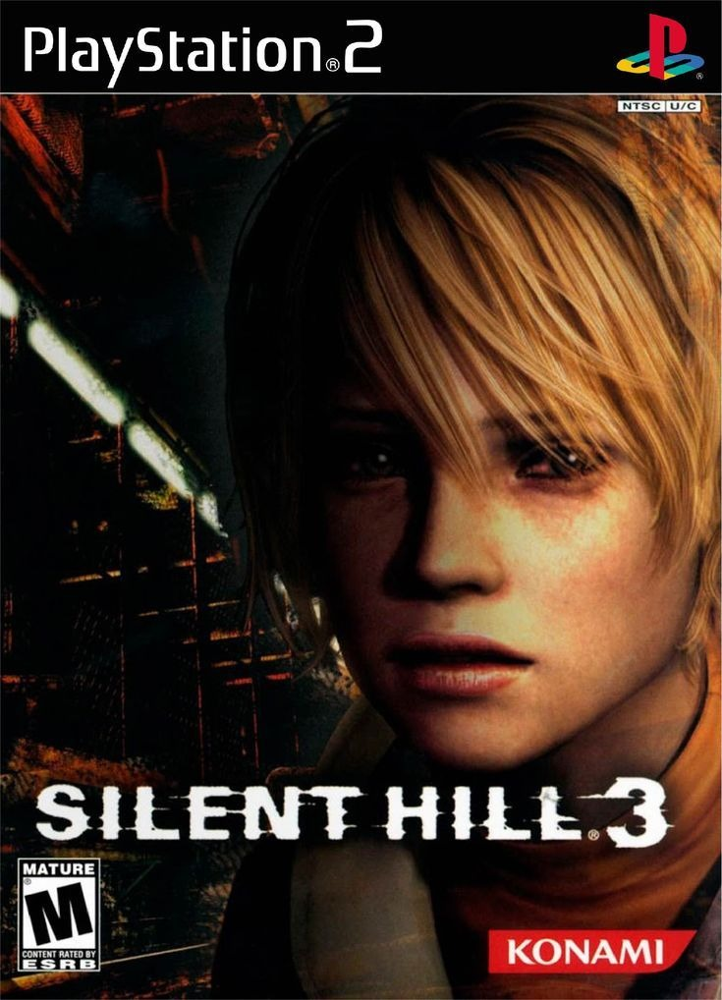

Sinopse
Silent Hill 3 é o terceiro título da série de survival horror, e segue Heather Mason, uma jovem que se vê envolvida em uma conspiração relacionada ao culto de Silent Hill. Ao explorar a cidade, Heather deve enfrentar suas próprias memórias, bem como criaturas grotescas que surgem de seus piores pesadelos.
O jogo mantém a atmosfera psicológica e o terror psicológico da série, com uma jogabilidade focada em combate e exploração, além de uma narrativa que conecta diretamente com os eventos de Silent Hill 1. A história aborda temas como identidade, culpa e o sobrenatural.
Características Principais
- História envolvente e ligação com os eventos do primeiro jogo
- Ambiente denso e aterrorizante, com gráficos impressionantes para a época
- Inimigos variados e criativos, além de chefes desafiadores
- Jogabilidade focada em exploração, puzzles e combate psicológico
- Trilha sonora e efeitos sonoros imersivos que intensificam a atmosfera de terror
- Elementos narrativos profundos e simbólicos
Imagens Adicionais